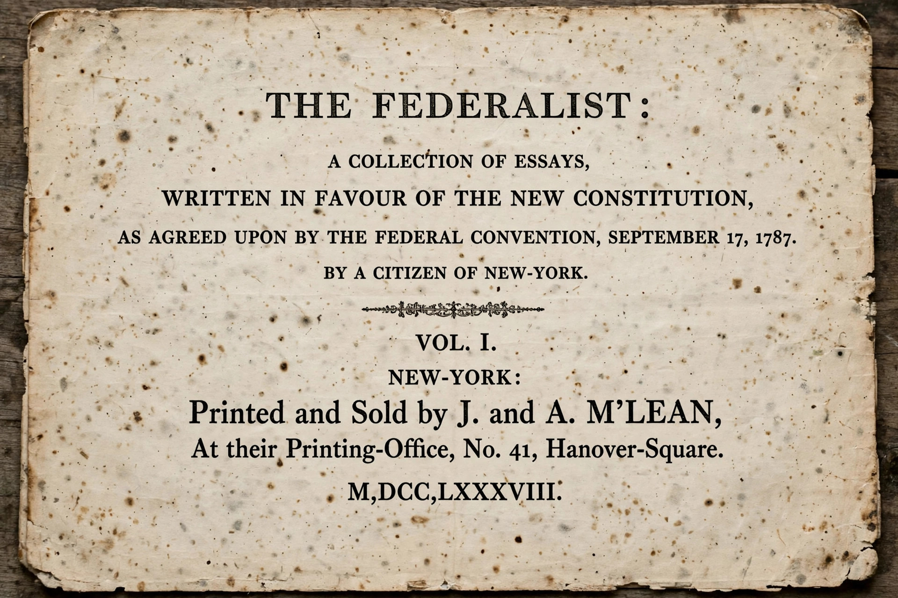

Federalist No. 47 is an essay by James Madison, the forty-seventh of The Federalist Papers. It was published on 30 January 1788 under the pseudonym Publius, shared by Madison, Alexander Hamilton and John Jay in arguing for ratification of the United States Constitution. Its title is "The Particular Structure of the New Government and the Distribution of Power Among Its Different Parts".

Madison answers critics who charged that the proposed Constitution violated the separation of powers by blending legislative, executive and judicial functions. Drawing on Montesquieu, he argues that the principle is violated only where the whole power of one department is exercised by the same hands that hold the whole power of another — not where there is partial overlap or shared control.
He surveys the British constitution and the state constitutions, showing that none maintains an absolute separation: executives hold vetoes, legislatures impeach and judge, and judiciaries are appointed by other branches. Such intermixture, he concludes, is both the practice of admired constitutions and necessary for checks and balances to function.
Together with Federalist No. 48 and No. 51, No. 47 is frequently cited in American constitutional law on the separation of powers, including debates over the nondelegation doctrine and executive authority.